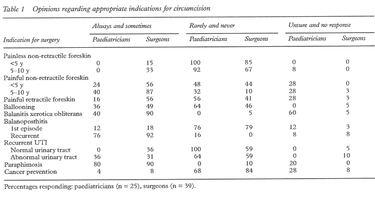
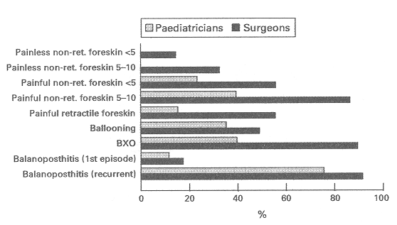
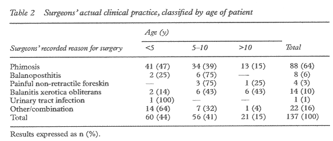

THE CIRCUMCISION REFERENCE LIBRARY
|
Department of Clinical
Effectiveness |
A study of clinical opinion and practice regarding circumcisionZ Farshi, K R Atkinson, R Squire Abstract Aim To establish clinical opinion regarding appropriate indications for circumcision and to examine actual clinical practice. Methods A questionnaire was sent to all NHS hospital consultants in the Yorkshire region of the UK identified as having a role to play in the management of boys (under 16 years of age) requiring circumcision. Retrospective data on actual clinical practice during a three month study period were also collected via a simple proforma. Results Of 153 questionnaires sent, 64 were returned. Responses revealed varying opinions regarding appropriate indications for circumcision within each consultant group, and between paediatricians and surgeons. Surgeons were generally more inclined to recommend circumcision for each of the indications listed in the questionnaire. Analysis of clinical practice revealed that almost two thirds of procedures were carried out for phimosis, and nearly half of these children were under the age of 5 years. Conclusion There are
differences in the clinical opinions of surgeons and
paediatricians on what constitutes an appropriate
indication for circumcision. Paediatricians' opinions are
generally more in line with current evidence than those
of surgeons, possibly resulting in many unnecessary
circumcisions. Keywords: circumcision; clinical opinion; clinical practice; regional audit
A number of clinical reports published in British journals recommend that circumcision is indicated for established clinical reasons only and that these are present in only a small percentage of boys.1-4 However, there is evidence to suggest that the incidence of circumcision in the UK is higher than would be expected given these recommendations.5-9 It is estimated that a total of 30 000 circumcisions are carried out in England each year. Department of Health statistics for 1995/96 reveal that 62% of these are performed on boys under the age of 15, with the Yorkshire region ranking sixth highest in terms of the number carried out on boys of this age.7 8 We aimed to establish clinical opinion on appropriate indications for circumcision and examine actual clinical practice in the Yorkshire region. Patients and methods To establish clinical opinion on appropriate indications for circumcision, we designed a questionnaire based on a list of indications for surgery, highlighted in a review of circumcision in childhood.1 Table 1 lists these indications. We added pain as a presenting symptom because we believe that children are commonly referred for this reason. However, very little has been written about pain as an indication for circumcision.  We sent questionnaires to all NHS hospital consultants in the Yorkshire region whom we identified as having a potential role in the management of boys requiring circumcision. These were paediatric surgeons and paediatricians, as well as general surgeons and urologists from those hospitals where there was no paediatric surgical service. We asked respondents to indicate whether they would "always", "sometimes", "rarely", or "never" consider circumcision for each of the indications listed in the questionnaire, or whether they were "unsure". To examine actual clinical practice, we designed a proforma to obtain information about the age of patients undergoing circumcision and the documented indication for surgery. We sent a letter to surgeons working in all 14 NHS hospitals in the Yorkshire region, stating the purpose of the study and requesting permission to include their patients. Copies of the proforma were sent to the clinical audit department at each hospital where surgeons had agreed to participate. Details of patients undergoing circumcision were extracted from the central information system held at each hospital. Patient details were obtained from hospital case notes and recorded on the proforma. Completed proformas from each hospital were returned to the lead investigator. Individual surgeons were allocated a personal identification code so they could compare their practice with that of others. This process ensured a high level of confidentiality throughout the study. Results We sent 153 questionnaires to 78 surgeons and 75 paediatricians. Sixty four questionnaires were returned, 39 from surgeons (response rate 50%) and 25 from paediatricians (response rate 33%). Comparison of the responses, as presented in table 1, reveals that the opinions of surgeons and paediatricians vary, with surgeons generally more inclined to recommend circumcision, most apparent for balanitis xerotica obliterans (BXO), though this may be because some paediatricians are less familiar with this diagnosis. However, surgeons also showed more inclination to circumcise boys for more controversial indications such as non-retractile foreskins, pain, ballooning, and balanoposthitis. Figure 1 illustrates combined responses of "always" and "sometimes" from paediatricians and surgeons, further highlighting the variation in opinion between the two consultant groups.  We observed this variation of opinion within each consultant group for most indications, the widest variations being with regard to ballooning during micturition, and urinary tract infections. Eleven of the 14 hospitals invited to participate in the clinical study returned data, reporting 160 boys having undergone circumcision during the three month data collection period. A total of 137 boys underwent circumcision for medical reasons (the remaining 23 were carried out for religious reasons). Table 2 lists the medical indications for circumcision, classified by age groups. Overall 64% of circumcisions were carried out for "phimosis" and nearly half of these children were under 5 years of age, when pathological tightness of the foreskin almost never occurs.  Discussion The findings from the questionnaire highlight differences of opinions between paediatricians and surgeons, and we are concerned that surgeons seem more inclined to recommend circumcision for non-retractability than their paediatric colleagues. We believe that in many situations evidence supports a non-operative approach. It was reported in 1949 that the normal foreskin is seldom retractable at birth, and 6% of normal boys aged 5 or over still cannot retract the foreskin.10 This was supported by data suggesting that most boys who have a non-retractable foreskin at the age of 5 will have a normally retractable prepuce at puberty, with only 1% having a pathological problem.11 As a result of these studies it is widely accepted among paediatric surgeons that unless there is a pathological process such as BXO, the foreskin should become retractable without the need for intervention. BXO is thought to occur in approximately 1% of boys, is extremely rare under the age of 5, and most commonly occurs as a secondary event to a prepuce that has previously been retracted.2 We identified 41 children under the age of 5, circumcised for "phimosis". Phimosis is a term taken from a Greek word meaning "muzzled", but it is not clear whether this should include physiological non-retractibility of the prepuce, or just refer to pathological conditions. Because of this lack of clarity we did not use it in our questionnaire. However, we found it to be the most common term used as an indication for surgery in clinical practice. While it is extremely unlikely that the children under 5 years of age had pathological phimosis, some of the 47 children aged over 5 years who underwent circumcision for phimosis may have had BXO. It is interesting that the majority (74%) of surgeons appear to recognise BXO as an important condition, yet half of the paediatricians were unsure of its significance. We note that 49% of surgeons and 36% of paediatricians considered ballooning of the foreskin an indication for surgery. There is no evidence that ballooning is a pathological event occurring commonly in healthy but incompletely retractable foreskins, and generally does not occur when there is a pathological process such as BXO.2 12 We believe it is relevant that these issues are not fully covered in standard paediatric and surgical textbooks. We asked how the association of pain with non-retractability influences the clinical approach. In this context, pain may refer to soreness of the prepuce, possibly because of chemical irritation caused by contact with urine, or discomfort when trying to retract a "tight" foreskin. Not surprisingly pain biases both consultant groups towards circumcision, with surgeons more inclined towards a surgical solution than the paediatricians. We are not aware of any published data that include pain when assessing the indication for surgery, yet it must be one of the most common preputial problems that leads to children seeing their general practitioner, and then being referred to a specialist. The evidence regarding balanitis is less clear. While 3-4% of boys have one episode of balanoposthitis, less than half (probably 1% of boys overall) have recurrent episodes.1 In our study paediatricians and surgeons largely agreed that to carry out a circumcision following a single infection is unwarranted. Alternative options are available for recurrent balanitis, but surgery remains an option. The role of circumcision in preventing urinary tract infection is controversial, but current data would suggest that while neonatal circumcision reduces the incidence of infection in childhood, the risk of renal damage is not reduced.13 14 Urinary infection may provide a theoretical indication for circumcision, particularly in the presence of an abnormal urinary tract which has been complicated by recurrent infections. However, there is no published evidence to support this approach and routine circumcision to prevent urinary tract infection is not recommended.15 The variation in opinions which we found may reflect the level of uncertainty in this area. There is no published evidence to support carrying out circumcisions on boys following an episode of paraphimosis, or to prevent subsequent cancer. Our study identified some clinicians who might disagree with this statement, but it is worth mentioning that paraphimosis is rare in children, and the clinical study did not identify any children in whom this indication was recorded. We aimed to build a picture encompassing the opinions and practice of specialists in a single region of England. Difficulties encountered in getting complete data are inevitable in this context. The overall response to the questionnaire was disappointing. The results were anonymised, so it is not possible to ascertain if the 33% of paediatricians, or the 50% of surgeons who replied were a representative sample, or even if the surgeons included were the same as those actually carrying out the circumcisions in the clinical study. No attempt was made to verify the diagnoses that were quoted as an indication for circumcision, and as the majority was carried out for "phimosis" some of the data should be interpreted with caution. Despite these reservations we believe that the data reflect current attitudes of consultants to foreskin problems. Because of a lack of available data we were unable to calculate the incidence of circumcision within the participating hospitals. Using Department of Health episode statistics we have ranked 14 regions of England in terms of the number of circumcisions performed on boys. Yorkshire region ranks sixth highest, carrying out 8% of these circumcisions nationally. Recent published evidence recommends that circumcisions should be carried out for established clinical reasons only; on that basis we suggest that up to 88 (64%) circumcisions carried out for phimosis in the three month study period may have been unnecessary.17 If our data reflect the national picture, then movement towards more evidence based practice would result in a significant reduction in workload, cost and most importantly, unnecessary operations. Circumcisions are not always uncomplicated and there is increasing public concern that unwarranted male circumcision constitutes a form of abuse.16 17 We have shown a widespread discrepancy between the opinions of the two consultant groups studied. In some areas this may be because the evidence is poor, so that there are grounds for controversy. However, it is likely that lack of knowledge of existing evidence has a major impact in this field. Paediatricians may perceive this to be a surgical problem and thus not their responsibility. Yet much of the data are in the paediatric domain, reflected in this study by the fact that paediatricians' opinions are more in line with current evidence. Perhaps paediatricians should bear some responsibility (where possible) for ensuring that children managed by surgical colleagues receive appropriate treatment. Acknowledgments The authors would like to acknowledge the contributions made from clinical audit staff in participating hospitals, consultants who participated in the study, and/or agreed for their patients to be included. The authors would also like to thank the Yorkshire Clinical Audit Unit, The University of Hull, for providing funding for the study.
© 2000 by Archives of Disease in Childhood |
http://www.cirp.org/library/procedure/farshi1/